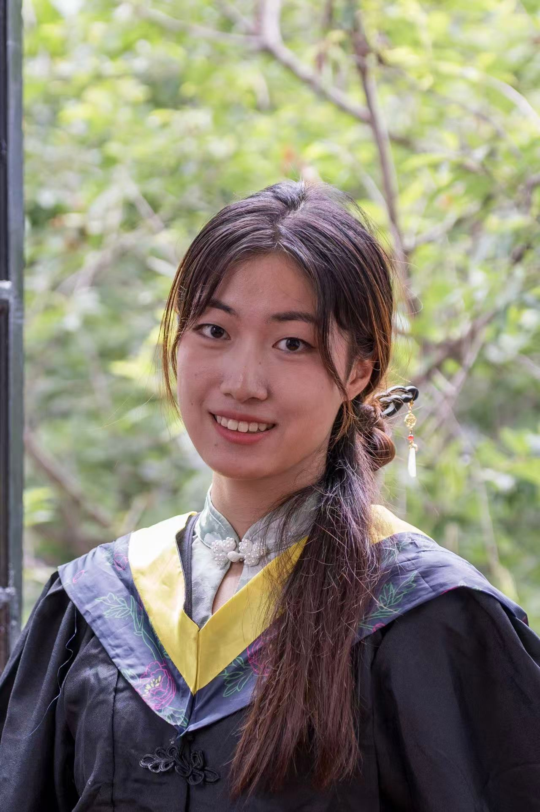

Shuting Pang
University of Electronic Science and Technology of China (UESTC)
Hi, I’m Shuting Pang. I am a Master’s student in Computer Science and Technology at the University of Electronic Science and Technology of China (UESTC), supervised by Prof. Xiaoshuang Shi. I received my Bachelor’s degree in Computer Science and Technology from Sichuan University (SCU).
My research focuses on trustworthy AI for healthcare, particularly medical foundation models and multimodal learning. I am interested in developing AI systems that can generalize across real-world healthcare settings and provide reliable and interpretable predictions.
🤖 Research
Cross-Age and Cross-Setting Visual Foundation Models for Mental Health
LLMs for Structured Clinical Data: Adaptation and Feature Interpretation
Interpretable Representation Learning for Medical Imaging Diagnosis
🔥 News
- 2026.05 One first-author paper has been accepted by Pattern Recognition.
- 2025.03 One first-author paper has been accepted by Pattern Recognition.
- 2024.09 One paper has been accepted by Information Fusion.
📚 Selected Publications
(* equal contribution)
- S. Pang*, Y. Dong*, et al. “Feature-interpretable disease prediction from tabular data via dynamic GCN and LLMs.” Pattern Recognition, 2026.
- S. Pang*, Y. Chen*, et al. “Interpretable 2.5D network by hierarchical attention and consistency learning for 3D MRI classification.” Pattern Recognition, 2025.
- R. Wang, X. Shi, S. Pang, et al. “Cross-attention guided loss-based deep dual-branch fusion network for liver tumor classification.” Information Fusion, 2025.
🏆 Honors and Awards
- National Scholarship (Top 1%)
- Tencent Scholarship
- Outstanding Graduate of Sichuan Province
- Sichuan Province Comprehensive Quality A-level Certification
- OPPO “Duty” Scholarship
👩🎓 Education
- University of Electronic Science and Technology of China (UESTC)
Master of Computer Science and Technology · Sep. 2024 – Present
GPA: 3.95/4.0 - Sichuan University (SCU)
Bachelor of Computer Science and Technology · Sep. 2020 – Jun. 2024
GPA: 3.84/4.0